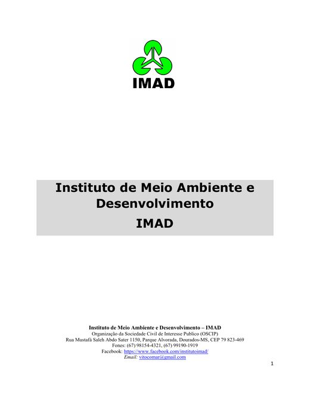

IMAD
IMAD

Dossiê · Institucional
Dossiê do IMAD
Panorama da trajetória do IMAD desde 2002: estratégia, principais projetos e serviços, iniciativas como o Programa Cidades Sustentáveis e a revisão do Plano Diretor, atuação em questões indígenas e parceiros.